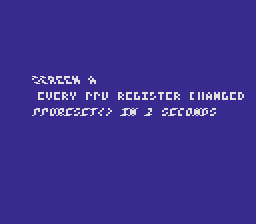

|
OpenSNES
Modern Open-Source SNES Development SDK
|
|
OpenSNES
Modern Open-Source SNES Development SDK
|
Game math & framework · between two screens.
A game is a chain of screens. Each one sets the PPU registers it needs, and every register it does not set keeps what the previous screen left: consoleInit() rewrites only a few of them. ppuReset() rewrites all of them, to the value they had at power-on, and puts the library's shadows back with them. Screen A here changes nearly every PPU register; two seconds later the program calls ppuReset() and sets up screen B the way a first screen is set up. Screen B shows nothing of screen A.

Screen A: Mode 1, the text on BG3, scrolled, tinted by color math, in 2×2 mosaic blocks, and waving under an HDMA channel.
testing/manifests/basics_ppu_reset.toml reads the PPU registers (luna's own view of them) and the library's shadows twice: at main(), before the program writes anything, and at the first instruction of screen_b_setup(), right after ppuReset(). Both readings must give the same values. Built without the ppuReset() call, the ROM fails 80 of those checks.
console, dma, text, background, sprite, colormath, mosaic, window, mode7, hdma, ppu_reset